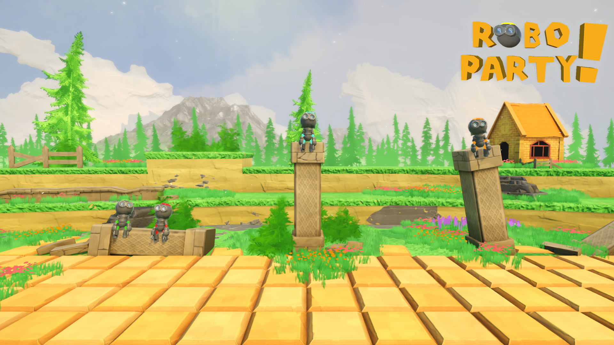

Catch them all
This game is all about catching the delicious fruits!
However the player has to watch out for the dangerous bombs that also drop from the sky. In this chaotic moment players will be able to jump over each other to JOINK the food from each other.
Rotating and lifting the phone will enable the player to move and jump while playing. The person who is able to collect the most fruits in time will win this mini game!